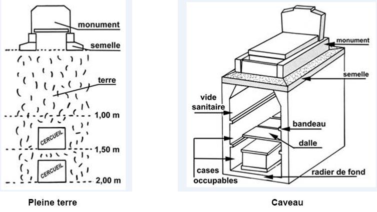

L’inhumation
L’inhumation, communément appelée enterrement, consiste à déposer le cercueil d’un défunt au cimetière en pleine terre, dans un caveau ou en enfeu dans le sud. Elle peut aussi concerner les cendres du défunt lorsqu’il s’agit d’inhumer une urne cinéraire dans un cimetière.
Le monument
Le monument funéraire est la partie supérieure d'une sépulture. Il représente la partie matérielle du souvenir, à la fois lieu de mémoire et de recueillement pour les familles Généralement en granit, (parfois en pierre) il peut être de diverses formes et coloris.
Le projet de monument est à définir en respectant les règles du cimetière. La mairie peut fixer dans ce règlement des limites de hauteur de monument, d’emprise du monument et la pose d’une semelle peut également être imposée, là aussi avec des spécificités différentes selon les communes.
La semelle
Elle sert d’assise au monument funéraire Elle peut être en béton ou en granit
Le granit
Une matière noble au service du souvenir Le granit par sa diversité de couleur, sa dureté, sa résistance à l’érosion permet de pérenniser toutes sortes de réalisation.
Cimetière
La commune va définir un règlement intérieur de cimetière. Ce règlement va régir les zones du cimetière : concession, carré militaire, columbarium, jardin du souvenir… Chaque famille peut acquérir une concession ; il s’agit de l’usage d’un emplacement et non de la propriété du foncier. Les différents types de concession se distinguent par les personnes auxquelles elles sont réservées, ainsi que par leur durée :
- Une concession individuelle est réservée à la personne pour laquelle elle a été acquise.
- Une concession collective est réservée aux personnes désignées dans l'acte de concession.
- Une concession familiale est réservée à son titulaire initial et aux membres de sa famille.
Plusieurs durées de concession peuvent être accordées :
- Concession temporaire : entre 5 ans et 15 ans
- Concession trentenaire : 30 ans
- Concession cinquantenaire : 50 ans
- Concession perpétuelle : durée illimitée
Le prix d'une concession, fixé par le conseil municipal, varie d'une commune à l'autre.
Pour avoir le droit d'être inhumé dans une commune, il faut être dans l'une des situations suivantes :
- Être décédé dans la commune, quel que soit le domicile de la personne
- Être domicilié dans la commune
- Bénéficier d'une concession familiale
- Être inscrit sur la liste électorale de la commune si on habite à l'étranger
Si vous n'êtes pas dans l'une de ces situations, vous pouvez demander à acquérir une concession dans la commune. Mais le maire peut refuser. Il peut invoquer un manque de places dans le cimetière ou la politique communale de gestion du cimetière. Il est utile de consulter le règlement intérieur du cimetière avant de déposer votre demande.
